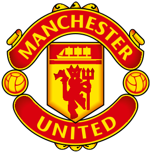
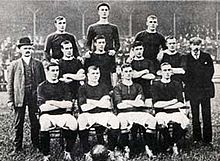
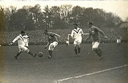

Tahun awal (1878–1945)

Tim pertama kali dibentuk dengan nama Newton Heath Lancashire and Yorkshire Railway F.C. pada 1878 sebagai tim karya Lancashire dan Yorkshire, stasiun kereta api di Newton Heath. Kaus tim berwarna hijau - emas. Mereka
bermain di sebuah lapangan kecil di North Road, dekat stasiun kereta api Piccadilly Manchester selama lima belas tahun, sebelum pindah ke Bank Street di kota dekat Clayton pada 1893. Tim sudah memasuki kompetisi sepak bola tahun
sebelumnya dan mulai memutuskan hubungannya dengan stasiun kereta api, menjadi perusahaan mandiri, mengangkat seorang sekretaris perkumpulan dan pengedropan "L&YR" dari nama mereka untuk menjadi Newton Heath F.C saja. Tak lama
kemudian, pada tahun 1902, tim nyaris bangkrut, dengan utang lebih dari £2500. Lapangan Bank Street mereka telah ditutup.
Pada Januari 1902, dengan utang £ 2.670 - setara dengan £ 250.000 per 2014 - klub itu disajikan dengan urutan berliku, Sebelum tim mereka bubar, mereka menerima investasi dari J. H. Davies, direktur Manchester
Breweries. Awalnya, seorang legenda tim, Harry Stafford, yang merupakan kapten tim, memamerkan anjing St. Bernard nya, kemudian Davies memutuskan untuk membeli anjing itu. Stafford menolak, tetapi berhasil memengaruhi
Davies untuk menanamkan modal pada tim dan menjadi chairman tim. Diadakan rapat untuk mengganti nama perkumpulan. Manchester Central dan Manchester Celtic adalah nama yang diusulkan, sebelum Louis Rocca, seorang imigran muda
asal Italia, berkata "Tuan-tuan, mengapa kita tidak menggunakan nama Manchester United?" Nama ditetapkan dan Manchester United secara resmi eksis mulai 26 April 1902. Davies juga memutuskan untuk mengganti warna tim dan
terpilihlah warna merah dan putih sebagai warna tim Manchester United.

Ernest Mangnall ditunjuk menjadi sekretaris klub menggantikan James West yang mengundurkan diri pada tanggal 28 September 1902. Mangnall bekerja keras untuk mengangkat tim ke Divisi Satu dan gagal pada upaya pertamanya,
menempati urutan 5 Liga Divisi Dua. Mangnall memutuskan untuk menambah sejumlah pemain ke dalam klub dan merekrut pemain seperti Harry Moger, Dick Duckworth, dan John Picken, ada juga Charlie Roberts yang membuat dampak besar.
Dia dibeli £750 dari Grimsby Town pada April 1904, dan membawa tim ke posisi tiga klasemen akhir musim 1903-1904. Mereka kemudian berpromosi ke Divisi Satu setelah finis di urutan dua Divisi Dua musim 1905–06. Musim pertama
mereka di Divisi Satu berakhir kurang baik, mereka menempati urutan 8 klasemen. Akhirnya mereka memenangkan gelar liga pertamanya pada tahun 1908. Manchester City sedang diselidiki karena menggaji pemain di atas regulasi yang
ditetapkan FA. Mereka didenda £250 dan delapan belas pemain mereka dihukum tidak boleh bermain untuk mereka lagi. United dengan cepat mengambil kesempatan dari situasi ini, merekrut Billy Meredith dan Sandy Turnbull, dan
lainnya. Pemain baru ini tidak boleh bermain dahulu sebelum tahun Baru 1907, akibat dari skors dari FA. Mereka mulai bermain pada musim 1907–08 dan United membidik gelar juara saat itu. Kemenangan 2–1 atas Sheffield United
memulai kemenangan beruntun sepuluh kali United. Namun pada akhirnya, mereka tutup musim dengan keunggulan 9 poin dari rival mereka, Aston Villa..

Klub membutuhkan waktu dua tahun untuk membawa trofi lagi, mereka memenangkan trofi Liga Divisi Satu untuk kedua kalinya pada musim 1910–11. United pindah ke lapangan barunya Old Trafford. Mereka memainkan pertandingan
pertamanya di Old Trafford pada tanggal 19 Februari 1910 melawan Liverpool, tetapi mereka kalah 4-3. Mereka tidak mendapat trofi lagi pada musim 1911–12, mereka tidak didukung oleh Mangnall lagi karena dia pindah ke Manchester
City setelah 10 tahunnya bersama United. Setelah itu, mereka 41 tahun bermain tanpa memenangkan satu trofi pun. Pada tahun 1922, tiga tahun setelah pembukaan kembali sepak bola setelah Perang Dunia Pertama, klub itu terdegradasi
ke Divisi II, di mana ia tetap sampai mendapatkan kembali promosi pada tahun 1925. Terdegradasi lagi pada tahun 1931, Manchester United menjadi klub yo-yo, mencapai posisi sepanjang masa terendah tempat ke-20 di Divisi II pada
tahun 1934. Setelah kematian dermawan utama klub, J. H. Davies, pada bulan Oktober 1927, keuangan klub memburuk sejauh bahwa Manchester United kemungkinan akan bangkrut kalau bukan untuk James W. Gibson, pada bulan Desember
tahun 1931, investasi £2,000 dan memegang kendali klub. Pada musim 1938-39, tahun terakhir sepak bola sebelum Perang Dunia Kedua, klub selesai di posisi 14 Divisi Pertama.